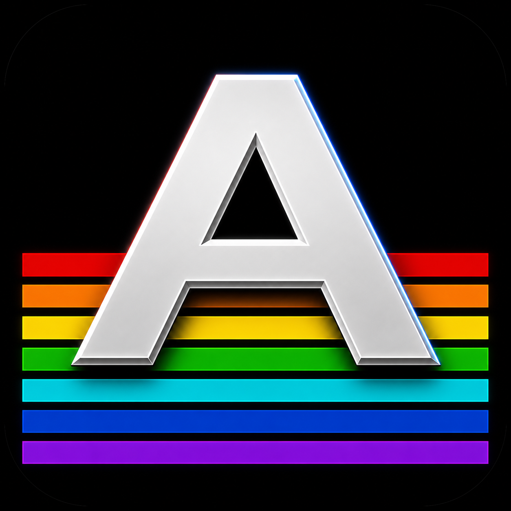

OCS Custom Chips
Copper, bitplanes, sprites, blitter, Paula audio, and disk DMA are tested through focused conformance matrices.

Amiga 500 PAL emulator
A work-in-progress C# emulator built alongside CopperMod, focused on cycle-aware Amiga 500 behavior, custom chips, floppy loading, and the tiny CopperStart Kickstart-compatible boot path.
Current shape
CopperScreen can boot ADF and IPF disk images, render OCS graphics, play Paula audio, exercise CIA timing, and test either CopperStart or a local Kickstart 1.3 ROM. Compatibility is still improving game by game.
Copper, bitplanes, sprites, blitter, Paula audio, and disk DMA are tested through focused conformance matrices.
A compact Kickstart-like implementation targets the boot path needed by many disk images without bundling ROM files.
ADF, ZIP-wrapped ADF, and managed IPF decoding feed the raw floppy-controller path for loader and protection testing.
Vanilla and expanded A500 profiles switch between CopperStart and local real Kickstart 1.3 ROM experiments.
Try it
ROMs and commercial disk images are not included. Use your own legal images when testing the emulator.
dotnet run --project .\CopperScreen -- "path\to\disk.adf"
dotnet run --project .\CopperScreen -- --profile expanded-copperstart "path\to\disk.zip"